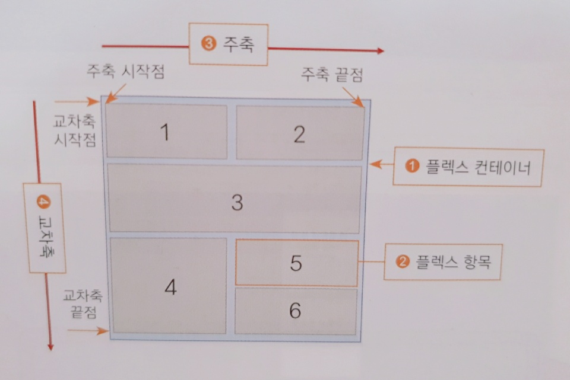

-
플렉스 컨테이너(부모 박스) : 플렉스 박스
레이아웃을 적용할 대상을 묶는 요소이다.
-
플렉스 항목(자식 박스) : 플렉스 박스
레이아웃을 적용할 대상으로 1~6까지 작은 박스들이 모두 해당한다.
-
주축(main axis) : 플렉스 컨테이너 안에서
플렉스 항목을 배치하는 기본 방향이다. 기본적으로 왼쪽에서 오른쪽이며
수평 방향으로 배치한다. 플렉스 항목의 배치가 시작되는 위치를 '주축
시작점', 끝나는 위치를 '주축 끝점'이라고 한다.
-
교차축(cross axis) : 주축과 교차하는 방향을
말하며 기본적으로 위에서 아래로 배치한다. 플렉스 항목의 배치가
시작되는 위치를 '교차축 시작점', 끝나는 위치를 '교차축 끝점'이라고
한다.